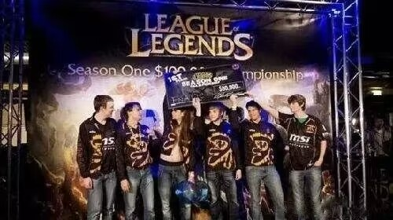
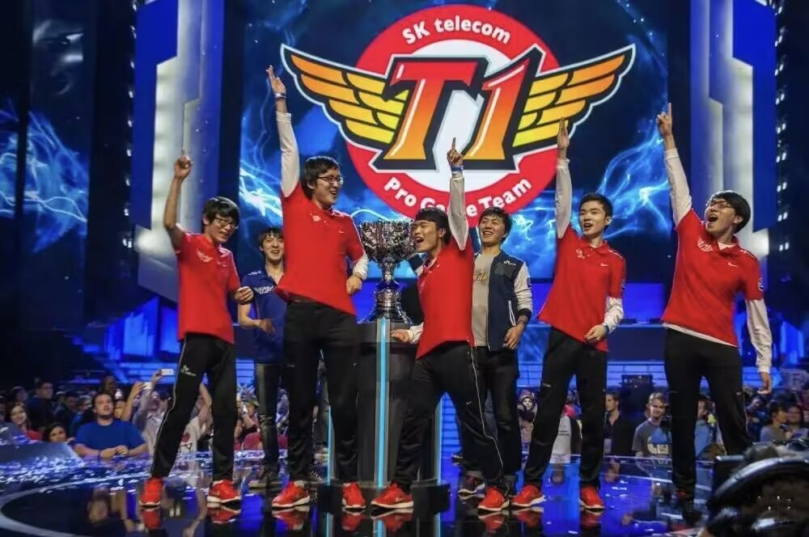
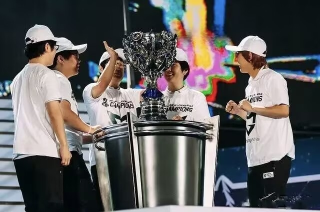
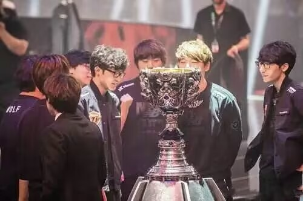
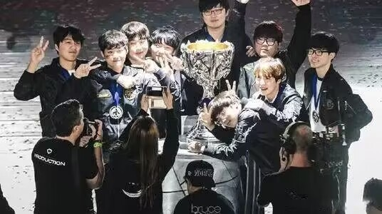
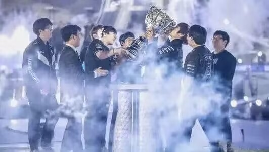
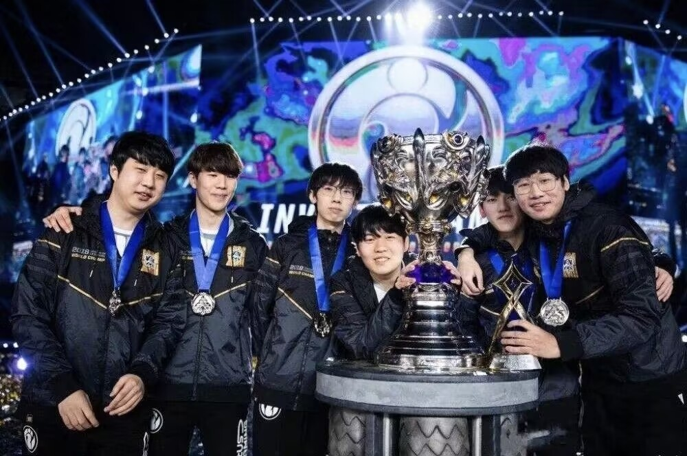
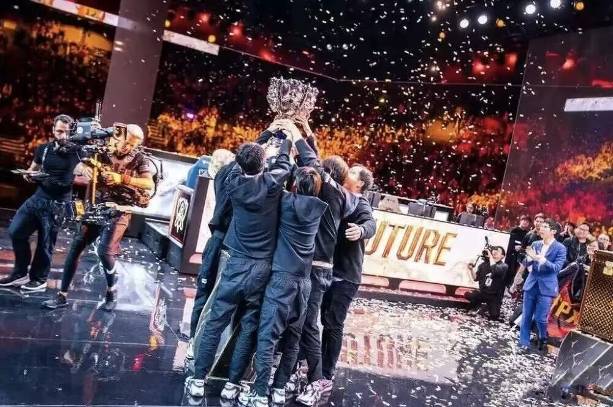
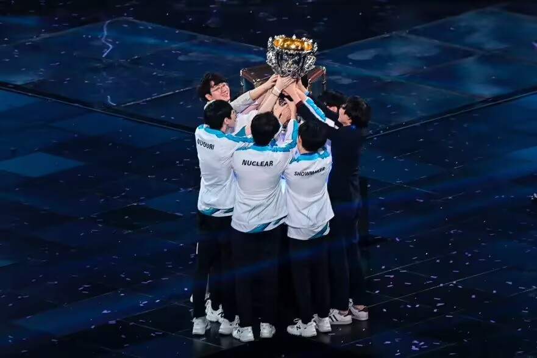
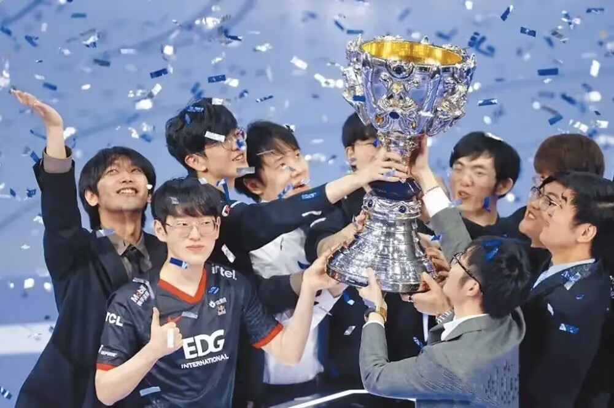

S1英雄联盟全球总决赛共有8支队伍参赛，当时还没有LPL和LCK赛区，虽然总体规模不是很大，但是作为LOL的第一届全球总决赛，历史意义却是毋庸置疑的。最终在决赛中FNC（fnatic）以2:0（当时还是BO3）击败aAa（Against All Authority）战队获得总冠军。
S2英雄联盟全球总决赛共有12支队伍参赛，LPL赛区由WE和IG正式加入S系列赛，开始追逐LPL的荣誉，最终来自中国台湾的TPA（Taipei Assassins 暗杀星）战队出乎所有人预料，作为本次世界赛的超级黑马以3:1击败韩国AZF（Azubu Frost）战队获得总冠军。
S3英雄联盟全球总决赛共有14支参赛队伍，LPL赛区由RYL（皇族）和OMG出征S3，继续追逐LPL的辉煌，最终SKT在横空出世的大魔王Faker的带领下一骑绝尘，最终以3:0大比分战胜了RYL（中国皇族）战队获得总冠军。可以这样说，S3赛季，是SKT王朝的初始。
S4英雄联盟全球总决赛共有16支参赛队伍，LPL赛区由EDG、SHR（皇族）和OMG继续征战，但由于历史最强队SSW的出现，不管是当年如日中天的SKT，还是其他战队，没有任何一支队伍能成为他们合格的敌人，最终SSW（三星）毫无悬念的以3:1 战胜中国皇族战队获得了总冠军
S5英雄联盟全球总决赛共有16支参赛队伍，LPL赛区由LGD、EDG和IG继续征战世界赛，但是本届比赛表现糟糕，仅EDG杀出小组赛，但也最终止步于8强。决赛中，由状态神勇的SKT以3:1战胜了同赛区的KOO（Koo Tigers）战队获得了第二次的全球总冠军，也标志着SKT的王朝进入鼎盛时期。
S6英雄联盟全球总决赛共有16支参赛队伍，LPL赛区再次派出了EDG、RNG和IM战队继续征战世界赛，而结果依然不尽人意，虽然EDG和RNG都成功小组出现，但也只止步于8强。最终在韩国内战中，SKT以3:2战胜了SSG，成就了SKT的三冠王，这也是目前其他队伍无法企及的最高荣誉。
S7英雄联盟全球总决赛共有24支参赛队伍，随着加入战队的逐渐增多，首次引入了入围赛。LPL赛区由EDG、RNG和WE继续征战世界赛，EDG未能成功小组出现，RNG和WE最终也止步于四强。决赛依然是韩国的内战，势头正盛的SSG战队以3:0战胜了SKT，终结了SKT的王朝，从此SKT走向低谷（决赛第3局在输掉关键团，Faker挠额头时颤抖的手依然历历在目，在赛后也是泪洒赛场）。
S8英雄联盟全球总决赛共有24支参赛队伍，LPL赛区由RNG、EDG和IG出征世界赛，3支战队全部晋级8强，势头正旺的RNG被寄予了整个LPL的希望，但最终爆冷不敌G2遗憾出局，那一次是RNG也是UZI距离大满贯最近的一次（季中赛+全球总决赛冠军），反而不被看好的IG战队在半决赛出色的发挥战胜KT闯入决赛，最终IG越战越猛以3:0击败FNC夺得了LPL赛区第一座S系列赛的冠军奖杯，这一年LPL进入了狂欢，我也第一次流下了激动的泪水。
S9英雄联盟全球总决赛共有24支参赛队伍，LPL赛区由FPX、RNG和IG战队出征世界赛，RNG发挥不佳未能小组出现，FPX和IG成功闯入四强，并且在半决赛相遇，最终IG1:3不敌FPX遗憾出局（个人认为，如果IG当时战胜了FPX，一定会加冕，那么JK也就不会选择离开IG了）。在决赛中，FPX以doinb式的打法最终战胜了欧洲劲旅G2获得了总冠军，为LPL拿回了第二座S系列赛的冠军奖杯，至此LPL赛区逐渐走向强盛。
S10英雄联盟全球总决赛共有16支参赛队伍，LPL赛区由TES、JDG、SN和LGD战队出征世界赛，LGD3:1打败IG搭上LPL通往S10的末班车，时隔5年重返S赛。LDG以小组第三的成绩，只差一步就能晋级淘汰赛。JDG首次参加世界赛拿到了八强，创造了队史最好成绩。TES作为LPL赛区夏季赛冠军在S10的舞台上止步四强。SN战队成为了S10舞台上最大的黑马，在大家都不看好的情况下他们一路走到了总决赛的舞台上，但最终面对如日中天的DWG他们还是败了，以黑马之姿问世却没有收获到最完美的结果，但是这个成绩也是所有LPL参赛队伍里面最好的成绩了。
S11英雄联盟全球总决赛共有17支队伍，LPL赛区由FPX、EDG、RNG和LNG战队出征世界赛。一号种子：EDG，在S11的比赛中的胜利可以说是极为的精彩，他们在总决赛最终在1：2的情况下成功翻盘，为LPL赛区拿下第3座S赛冠军。二号种子：FPX,在S11期间引进了牛宝，但是他们在本届的比赛中表现并不是很好，在小组赛就早早的淘汰。三号种子：RNG,RNG战队的实力一直都是极强的，但是在S11中最终背EDG淘汰止步8强，十分可惜。四号种子：LNG，LNG这支队伍从入围赛中成功突围，并且一路杀到了淘汰赛，但是最终也只能止步8强
